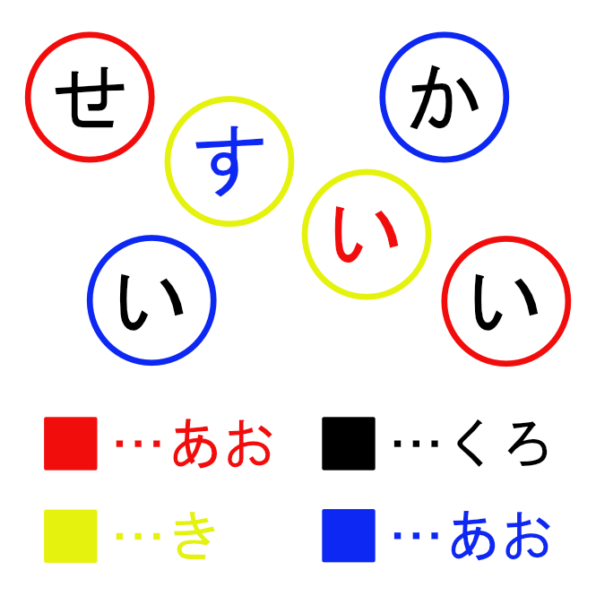
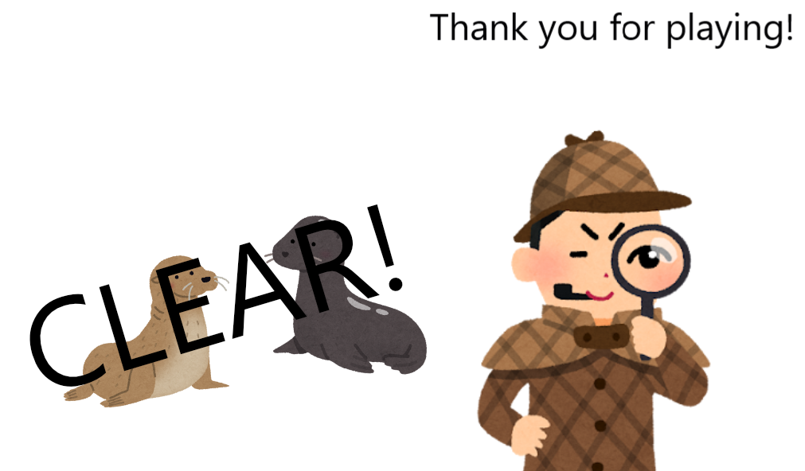

画像の「あか」のひらがなを「まえ」にずらすと以下のようになり、「あお」の丸の中のひらがなを左から読むと……

正解です！ クリアおめでとうございます！
今作のテーマは「色」でした。色の定義自体を変更できる謎があったらいいなと思い、最終問題から作ってみました。この「正解にする」シリーズももう5作目なのですが、おそらくこれで終わりです！
お疲れ様でした！

作者の他の謎解き ⇒ https://tankouideal.github.io/matome/
作者のXアカウント ⇒ https://x.com/tankouideal